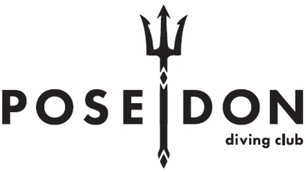
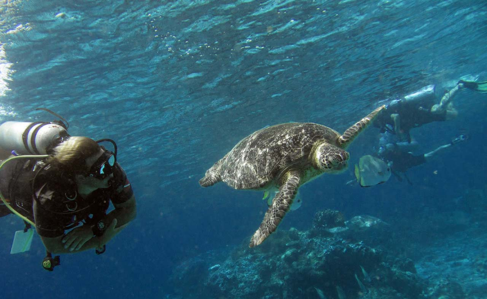

Рэки для Wreck Diver
У побережья Фуджейры затоплено несколько судов специально для дайверов. Идеальные условия для отработки навыков рэк-дайвинга: хорошая видимость, небольшая глубина, безопасные конструкции.
Углублённые навыки и новые горизонты подводного мира

Специализации PADI обеспечивают вас знаниями, навыками и опытом в выбранной области. На базовом курсе Open Water Diver вы получаете необходимый багаж знаний и навыков, а спецкурсы позволяют углубиться в конкретную тему: погружения на обогащённом воздухе, подводная фотография, рэки и многое другое. Master Scuba Diver — «чёрный пояс в дайвинге»: 5 спецкурсов + Rescue Diver дают вам высшее любительское звание PADI!
У побережья Фуджейры затоплено несколько судов специально для дайверов. Идеальные условия для отработки навыков рэк-дайвинга: хорошая видимость, небольшая глубина, безопасные конструкции.
Тёплая вода и спокойное море делают ночные погружения в Фуджейре комфортными даже для начинающих. Богатая ночная жизнь: осьминоги, крабы, биолюминесценция, охотящиеся мурены.
Дайв-сайты Фуджейры предлагают глубины от 5 до 40+ метров. Это позволяет пройти Deep Diver в реальных условиях с плавным набором глубины. Чистая вода и отсутствие сильных течений.

Научитесь безопасно погружаться на глубину до 40 метров. Планирование глубоких погружений, управление азотным наркозом, использование декомпрессионных таблиц и компьютеров, аварийные процедуры. 4 погружения с постепенным увеличением глубины.
Требование: AOWD или OWD + 10 погружений
ЗаписатьсяОткройте подводный мир после заката. Техника ночной навигации, использование фонарей и световых сигналов, коммуникация в темноте, работа с плавучестью без визуальных ориентиров. 3 ночных погружения.
Требование: OWD
ЗаписатьсяНаучитесь использовать обогащённый воздух (Nitrox) для более длинных и безопасных погружений. Теория газовых смесей, анализ содержания кислорода, планирование погружений на найтроксе, настройка компьютера. Преимущественно теоретический курс с 2 опциональными погружениями.
Требование: OWD, возраст 12+
ЗаписатьсяОсвойте подводную навигацию по компасу и естественным ориентирам. Прокладка маршрутов, навигационные паттерны (квадрат, треугольник), оценка расстояний, навигация в условиях ограниченной видимости. 3 погружения с навигационными упражнениями.
Требование: OWD
Записаться
Исследуйте затонувшие корабли у берегов Фуджейры! Техника безопасного проникновения, использование катушек и ходовых концов, планирование рэк-дайва, управление плавучестью в ограниченном пространстве. 4 погружения на реальных рэках.
Требование: AOWD
Записаться
Научитесь делать потрясающие подводные снимки. Основы подводной фотографии, работа со светом и цветом на глубине, композиция, макросъёмка, съёмка крупных объектов. Настройка камеры, постобработка. 2 фото-погружения.
Требование: OWD
ЗаписатьсяИспользуйте течения для захватывающих погружений. Планирование дрифт-дайва, техника входа и выхода, использование буя SMB, коммуникация с ботом, работа в группе на течении. 2 дрифт-погружения на сайтах Фуджейры.
Требование: OWD
ЗаписатьсяОсвойте методы подводного поиска и подъёма предметов. Паттерны поиска (круговой, линейный, сеточный), использование подъёмных мешков, работа с верёвками и карабинами под водой. 4 погружения с отработкой различных сценариев.
Требование: AOWD
Записаться
Научитесь правильно погружаться с лодки. Типы дайв-ботов, терминология, безопасный вход в воду и выход, работа с якорной линией, действия при течении, брифинг капитана. Обязательный навык для серьёзного дайвинга — большинство лучших сайтов доступны только с лодки. 2 погружения.
Требование: OWD
ЗаписатьсяБезопасное погружение в каверны — зоны пещер, где виден дневной свет. Техника работы с ходовыми концами, управление плавучестью без взмучивания, коммуникация в ограниченном пространстве, планирование газа по правилу третей. Курс НЕ допускает к полному пещерному дайвингу. 4 погружения.
Требование: AOWD
ЗаписатьсяНаучитесь использовать подводный скутер (DPV) для быстрого и эффективного перемещения под водой. Техника управления, безопасность, планирование маршрута с учётом запаса газа и заряда батареи, действия при отказе DPV. Увеличьте радиус исследования в разы! 2 погружения с DPV.
Требование: OWD
ЗаписатьсяУзнайте, как работает ваше снаряжение, и научитесь за ним ухаживать. Принципы работы регулятора, BCD, компьютера, гидрокостюма. Базовое обслуживание, хранение, мелкий ремонт в полевых условиях. Теоретический курс без обязательных погружений — полезен каждому дайверу!
Требование: OWD
Записаться
Самый полезный спецкурс для любого дайвера! Идеальная плавучесть — ключ к комфортному дайвингу: меньше расход воздуха, лучше контроль, безопаснее для рифов. Точная настройка грузов, дыхательные техники, горизонтальный трим, зависание в толще воды. 2 погружения с упражнениями.
Требование: OWD
ЗаписатьсяНаучитесь снимать потрясающее подводное видео! Основы подводной видеосъёмки, стабилизация, работа со светом, плавные панорамы, съёмка морской жизни. Монтаж и постобработка. Создайте свой первый подводный фильм! 2 видео-погружения.
Требование: OWD
Записаться
Научитесь определять обитателей подводного мира! Основные семейства рыб, их поведение и среда обитания. Узнайте, кого вы видите под водой: рыбы-ангелы, рыбы-бабочки, мурены, скаты, акулы, групперы. Программа AWARE учит бережному отношению к морской среде. 2 погружения с идентификацией.
Требование: OWD
ЗаписатьсяMaster Scuba Diver — высший непрофессиональный уровень PADI. Для его получения нужно: Rescue Diver + 5 спецкурсов + 50 погружений. Пройдите все спецкурсы у нас в ОАЭ и станьте мастером подводного мира!
Расскажите нам о вашем опыте и интересах — поможем выбрать идеальный спецкурс и подберём даты